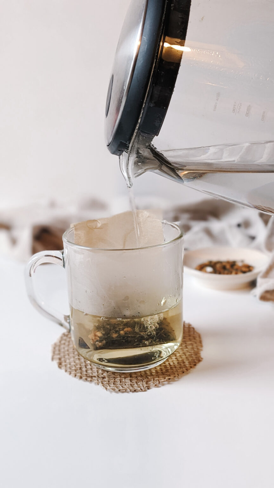
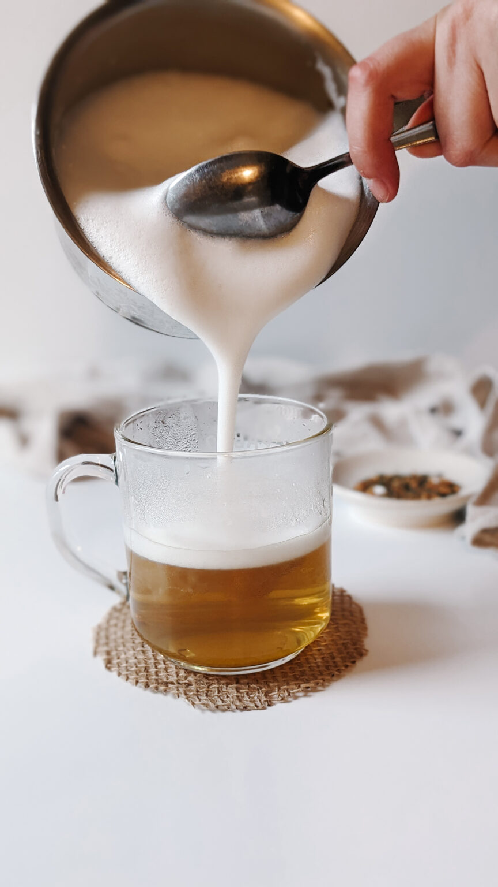
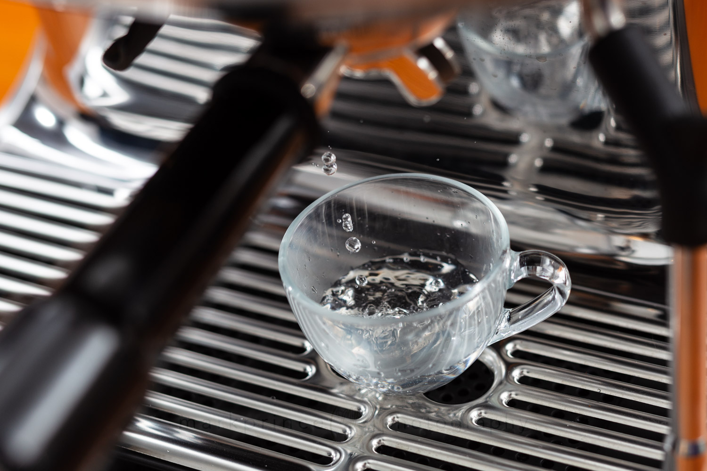
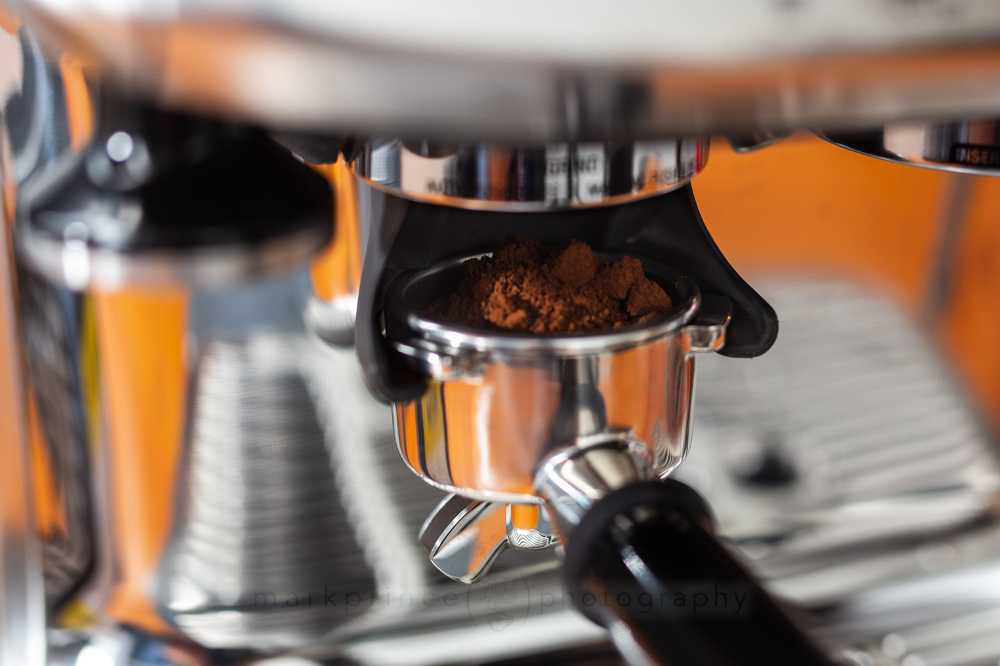
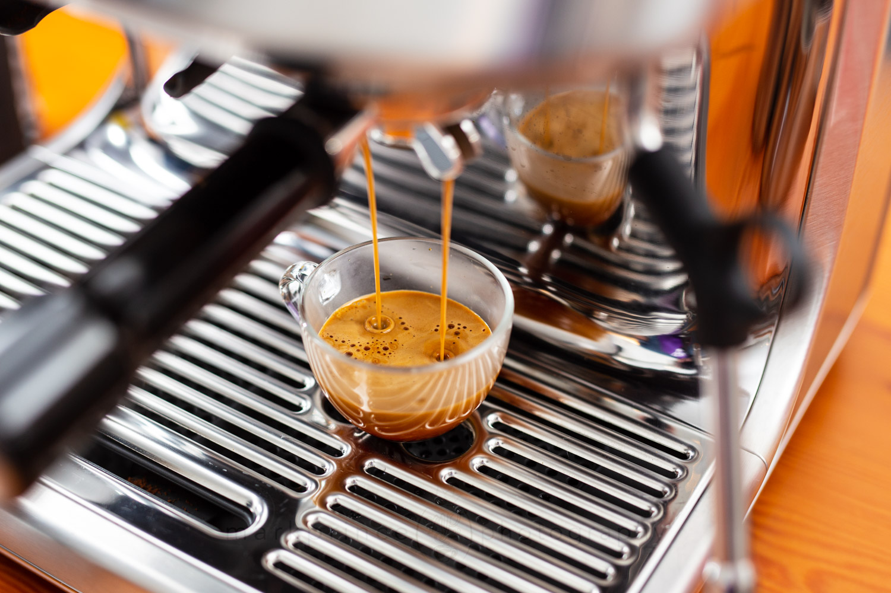
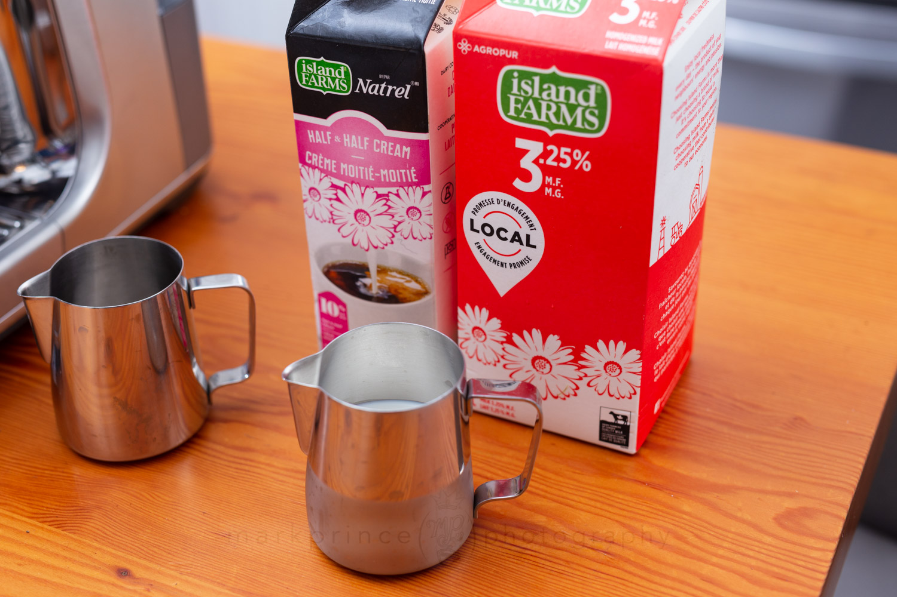
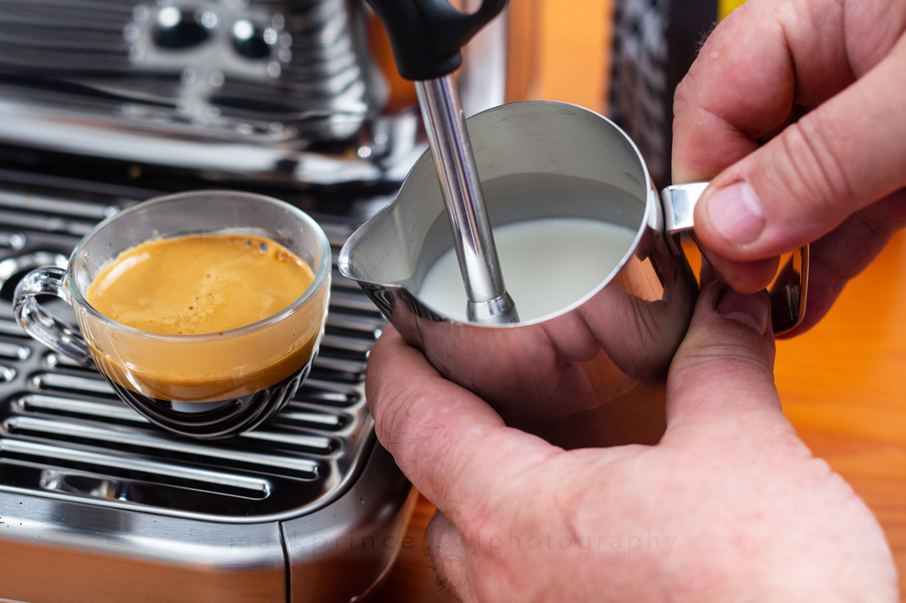
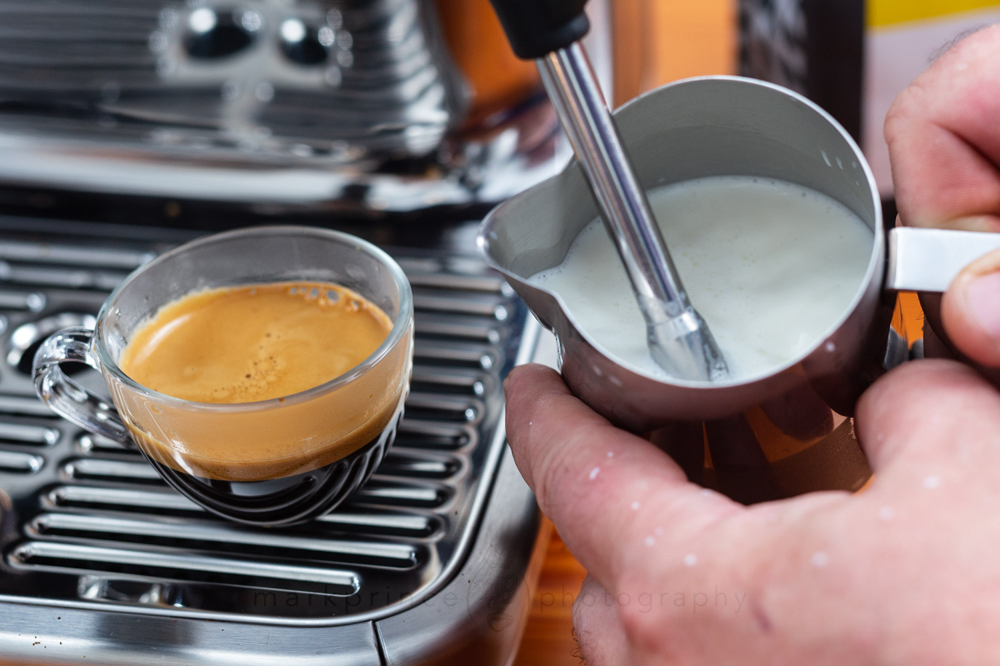
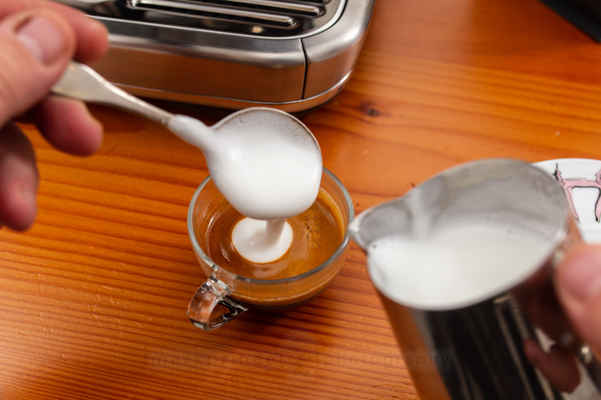

GENMAICHA LATTE
You may have noticed that matcha and hojicha are often featured on this tea blog. I consume those two Japanese green teas the most, but genmaicha is next in line! Genmaicha is a Japanese green tea blend that can actually be combined with matcha or hojicha for a unique flavour. But I like this tea best on its own. Similar to most teas, genmaicha can be enjoyed a few different ways. The savoury flavours make it great to use as a broth for soups. It can be used to make a warm and toasty green tea latte as well. If you want to change up your usual matcha latte or hojicha latte for another Japanese tea, follow this easy genmaicha latte recipe!...
-Water
The best water temperature to use when steeping genmaicha is 82°C or 180°F. The tea leaves may burn and steep a bitter cup if the water is too hot.-Sweetener
You can sweeten this latte with any type of sweetener. However, I really enjoy sweetening my genmaicha latte with brown sugar or honey. Alternatively, you can keep this genmaicha latte sugar free and skip this ingredient all together.-Milk
Heat the milk before frothing for best results.Here is what you will need:
- 1 tablespoon genmaicha, loose leaf (or 2 tea bags)
- ½ cup hot water (82°C or 180°F)
- 1 tablespoon sweetener of choice
- ¼ cup milk
 Heat and froth milk using a handheld frother or an electric frother. The milk should double in volume. Froth the warm milk until it is thick and cloud-like.
 Heat and froth milk of genmaicha green tea with the frothed milk. Garnish with a sprinkle of loose tea leaves and toasted brown rice, if desired. Enjoy!
How To Make a Macchiato
Necessary Supplies
- Fresh Roasted Coffee
- Filtered Water
- Fresh Whole Milk
Necessary Tools
- Pump Driven Espresso Machine ($250 minimum)
- Quality Burr Grinder ($125 minimum)
- Espresso Tamper ($25 minimum)
- Espresso Cups ($10)
- Steam Pitcher ($15)
Traditional Macchiato Steps
Traditional Macchiato Steps
We’re dealing with a tiny beverage, and maintaining heat is important. Preheat your machine, and especially your espresso cup. Prepare the Portafilter
Grind out your usual espresso dose (we use 18g in this Breville Barista Pro), level, tamp, and lock the portafilter in the machine. Pull Your Espresso Shot
Here, decide if you want two singles or one double. We’re brewing a double in this example. Prepare Milk for Microfoam
While your shot is brewing, get your milk ready. We like to go with about 100ml of whole milk, and add about 25ml of half and half (10% cream) milk for an added creamy sweet boost. Make Low Temp Microfoam
Here’s a secret to a fantastic traditional macchiato: you don’t have to steam milk up to the usual 65C (150F); in fact, your microfoam will be better tasting and have a more sweeter impact if you only steam to about 40C (105F). And that’s our target – create paint-like microfoam but don’t go hot Finish Milk Stretching
Once the steam pitcher is the slightest bit warm to your hand’s touch, it’s time to end the milk stretching and steaming in general. This is a good rule of thumb for maximizing the milk’s sweetness for your drink. Note I have not submerged the wand at this point. Spoon Out the Foam
Take a healthy spoonful of the milk froth and dollop it right onto the espresso shot, creating a nice white cap. If you’ve brewed a double shot (like we have here), two dollops of foam will do.
Serve with Demitasse Spoon
Serve the macchiato with a demitasse spoon in case the drinker wants to stir things up, though we recommend drinking it unstirred, for the layering effect’s different taste sensations. Enjoy!How to Make Cappuccino
What is a cappuccino, exactly?
A cappuccino is an espresso drink with steamed milk, milk foam and espresso. It’s very similar to a latte (cafe latte), but the proportion of steamed milk is different. Here’s the breakdown of a latte vs cappuccino:
- A cappuccino has equal parts espresso, steamed milk and foam (⅓ each).
- A latte is ⅓ espresso and 2/3 steamed milk, with a thin layer of foam on top. Here’s a chart that breaks it down!
The differences between the two drinks are pretty subtle, and so is the flavor. But you’re in luck: the cappuccino is the easier of the two to perfect at home. With a latte you’re looking for microfoam, steamed milk with a wet-paint like texture that’s almost impossible to get without an espresso machine. A cappuccino can easily be made with frothed milk using various tools: even a whisk!
How to make a cappuccino at home!
- Make the espresso using an espresso machine, espresso maker, or Aeropress (see above).
- Steam the milk (espresso machine method): Use the notes in the section above to steam the milk and get it nice and foamy.
- OR, heat the milk on the stovetop then froth it.A temperature of 150 degrees Fahrenheit is perfect: that’s where the milk is hot to the touch but not simmering. Then froth using your desired method to froth the milk until it’s very foamy. For a cappuccino you’ll want a good amount of froth: you’re going for ⅓ espresso, ⅓ steamed milk and ⅓ foam.
- Serve.Pour the frothed milk into the espresso and serve! It’s nice to use a latte cup, which holds the perfect amount.
Flat White
What’s a flat white?
A flat white is a coffee drink with espresso, steamed milk and a layer of foam on top. It’s similar to a latte and cappuccino, but has a thinner layer of foam on top. Modern coffee shops have very small differences between these three coffee drinks, and often times the lines are blurred. Generally, the major differences between a flat white vs latte vs cappuccino: are
...- Flat Whiteis the least frothy, with about ¼ inch microfoam at the top. The steamed milk is stretched 20-25%.
- Latteis medium frothy, with about ⅜ inch microfoam at top. The steamed milk is stretched 25-35%.
- Cappuccinois frothy but not foamy, with about ½ inch microfoam at top. The steamed milk is stretched the most of the three, at about 30-50%.
How to make a flat white at home
Got your equipment and ingredients? Let’s make a flat white! Here’s how to make this tasty drink at home:- Make the espressousing an espresso machine, espresso maker, or Aeropress
- Steam the milk (espresso machine method):See the recipe below for all the particulars: follow it carefully!
- OR, heat the milk on the stovetop then froth it.A temperature of 150 degrees Fahrenheit is perfect: that’s where the milk is hot to the touch but not simmering. Then froth using your desired method until the milk is frothed into small, even bubbles. Wait for 30 seconds to 1 minute to allow the foam to incorporate a bit into the milk so that the drink is creamy enough.
- Overall, experiment to find the method that’s right for you.Everyone has different equipment and different desires for their latte. Play with the method until you find what’s right for you!